UNIORG user manual
Account setup and procedures for students, organization administrators, deans, and OSAS personnel.
Illustrated editionLatest manuscript appendix
All 60 procedures include verified UNIORG screen images. Blue masks permanently hide personal details. Images are aligned with the matching feature; two related screen states are explicitly identified below. Select any screenshot to enlarge it. Follow the actual permissions granted to your account.
Download the complete text manual ↓ · Read research manuscript (PDF) ↗
GENERAL INFORMATION
System Overview
UNIORG is a configurable university-wide student organization management platform developed for the Office of Student Affairs and Services (OSAS) of Laguna State Polytechnic University Santa Cruz Campus. It functions as the central workspace of 39 recognized student organizations and covers the full cycle of organization life, from accreditation and document management to events, payments, elections and communications. The platform provides role-based web portals for OSAS personnel, college deans, organization advisers and officers, as well as students. Its document pipeline combines OCR text extraction with NLP auto-tagging and AI summaries so accreditation papers and organizational records remain searchable and organized.
Each organization is given its own configurable workspace with announcements, events calendar, payment collections, elections, e-library and EduShare folders, feedback hub and member list. Transactions follow a clear approval chain. Event proposals pass through the dean and OSAS before publishing, accreditation applications move through a guided multi-step renewal flow, while manual e-wallet payments are verified by organization admins against uploaded receipts. This keeps every record traceable, from submission up to approval.
Authorized Use Permission
UNIORG is a restricted university-operated system. Access to its administrative, accreditation, financial and configuration modules is strictly limited to authorized personnel of OSAS, the college deans and the designated advisers and officers of recognized student organizations. Students may only access their own records and the public or member-level functions of organizations they belong to. Access privileges are enforced through Role-Based Access Control (RBAC), so each account only sees the data and functions needed for its duties. Security policies, role assignments and accreditation period settings are restricted to OSAS administrators, and field-level users cannot alter system hierarchies. All accreditation decisions, proposal approvals, payment verifications and access events are recorded in the system logs for transparency and accountability.
By accessing UNIORG, users agree to its terms of service and acknowledge that the system processes sensitive information, including student identification records, Certificates of Registration, accreditation documents and payment receipts. All collection and processing comply with Republic Act No. 10173, or the Data Privacy Act of 2012. Any unauthorized extraction, distribution or misuse of student data or organizational records is prohibited and subject to administrative and legal penalties.
Points of Contact (Help Desk)
For account issues, accreditation concerns and technical problems, users may reach the OSAS help desk through the official OSAS office of LSPU Santa Cruz Campus during office hours. Organization-level concerns such as membership, payments and event details should first be coordinated with the respective organization adviser or officers through the in-system complaints and feedback hub or announcements channel. For quick answers, the built-in chatbot and FAQ library inside each workspace provide guidance on common procedures.
Authentication and Account Setup
Figure 125. This figure shows the login page of UniOrg.

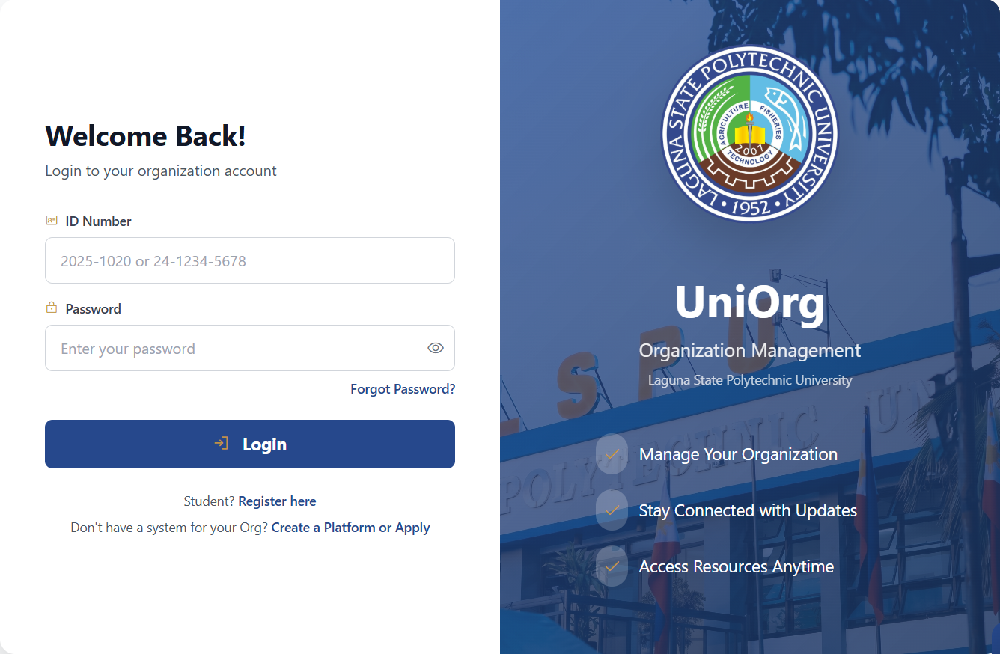
Enlarge screenshot ↗- Open the UniOrg web application in the browser.
- Enter your ID Number (format 2025-1020 or 24-1234-5678) and your password. Use the eye icon to show or hide the password.
- Click the Login button.
- The system verifies your credentials and redirects you to your role-based dashboard.
Figure 126. This figure shows the Upload COR step of student registration in UniOrg.

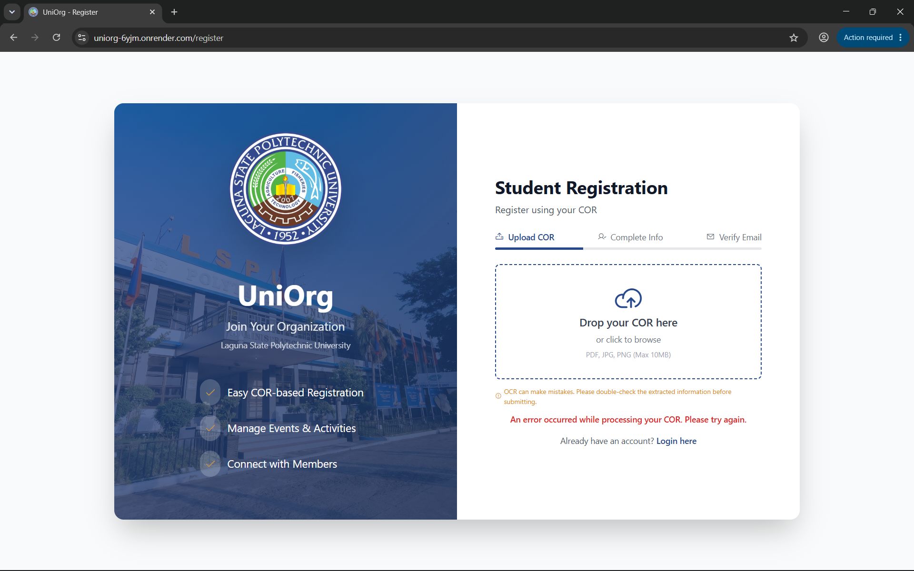
Enlarge screenshot ↗- Open the student registration page and fill out the basic account details first.
- Proceed to the verification step and ready a clear photo or scan of your Certificate of Registration.
- Upload the COR file in the upload slot provided.
- Click Submit and wait for the confirmation message.
- Your account moves to the Complete Info step once the COR is accepted.
Figure 127. This figure shows the Complete Info step of student registration in UniOrg.

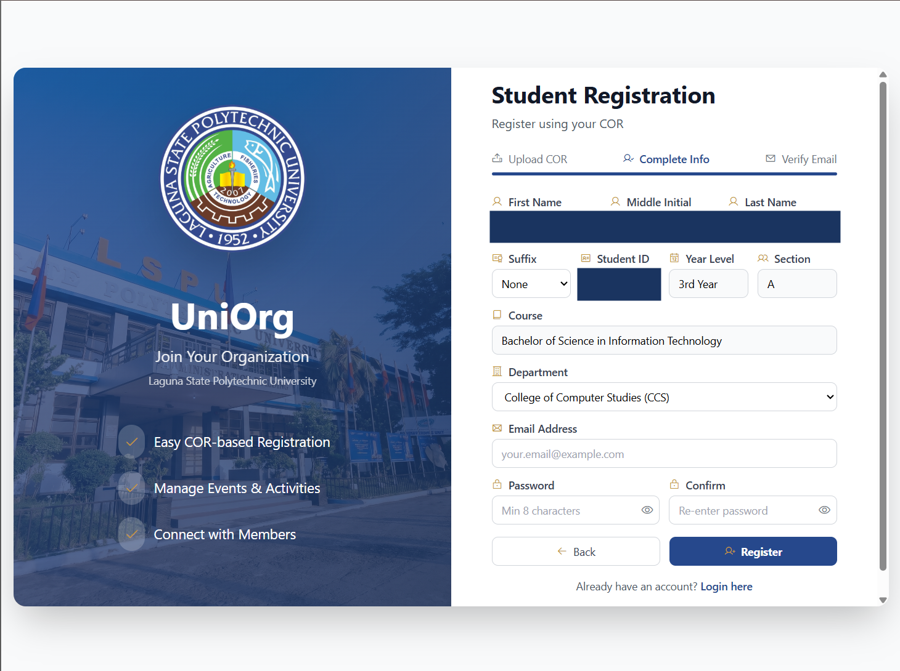
Enlarge screenshot ↗- From the login page, click the Register or Sign up button.
- Upload your Certificate of Registration (COR) for student verification.
- Fill out your personal details: First Name, Last Name, Student Number, Program, Year Level, Email Address, Contact Number, and Password.
- Review your entries and click the Submit button.
- A success message displays, and you can now log in to your account.
Student Users
Figure 128. This figure shows the student profile edit modal of UniOrg.

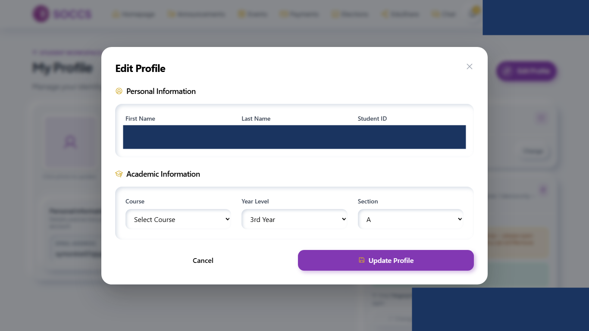
Enlarge screenshot ↗- Log in and go to your Profile page.
- Click the Edit Profile button to open the edit modal.
- Update your profile photo, contact number, or other personal details.
- Click the Save button.
- A confirmation message displays and your updated details appear on your profile.
Figure 129. This figure shows the student dashboard of UniOrg.

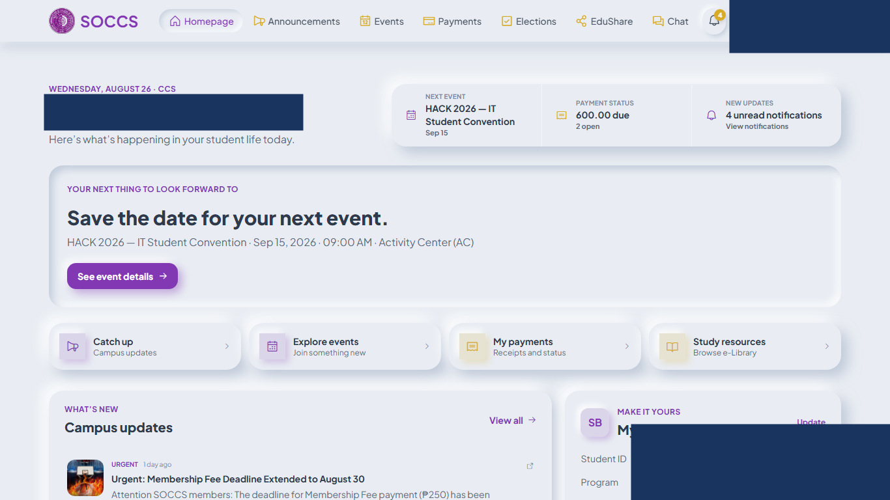
Enlarge screenshot ↗- Log in with your student account to land on the dashboard.
- View the summary cards for announcements, events, payments, and elections.
- Use the sidebar to jump to any module you need.
- Click the notifications bell to check the latest updates.
Figure 130. This figure shows the student announcements list of UniOrg.

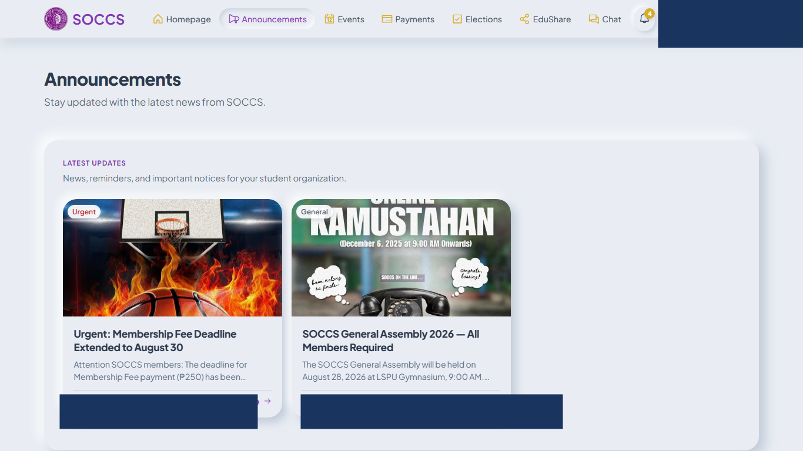
Enlarge screenshot ↗- Go to the Announcements tab to view all posted announcements.
- Click an announcement to read its full details.
- Check the pinned items for the most important updates.
- Use the search or filter if you are looking for a specific post.
Figure 131. This figure shows the student events list of UniOrg.

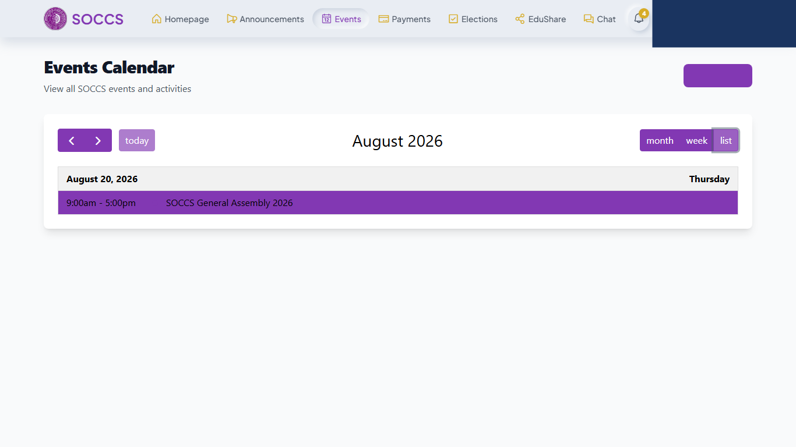
Enlarge screenshot ↗- Go to the Events tab to browse the upcoming events.
- Use the search or filter to find an event you like.
- Click an event to view its details and schedule.
- Click Register to join the event.
Figure 132. This figure shows the student events calendar view of UniOrg.

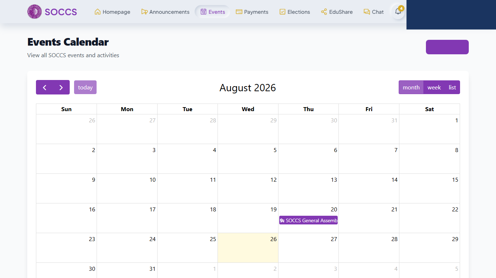
Enlarge screenshot ↗- Open the Events calendar view to see activities by date.
- Switch between month and week views as needed.
- Click an event chip on the calendar to view its details.
- Register directly from the details shown.
Figure 133. This figure shows the event registration modal of UniOrg.

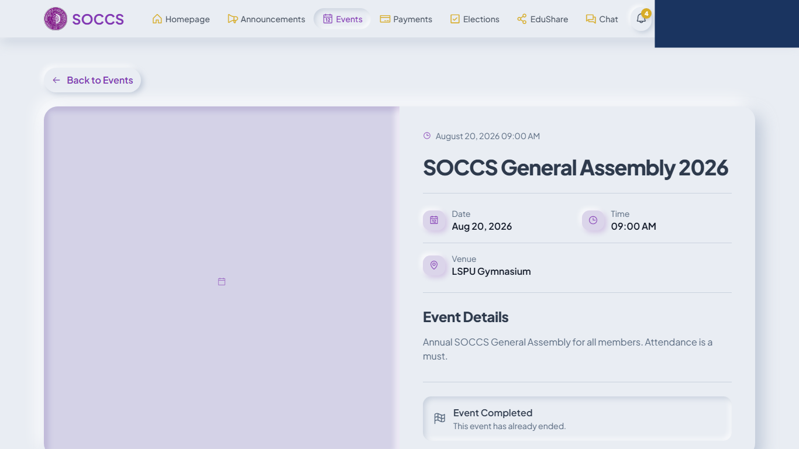
Enlarge screenshot ↗- Go to the Events tab to view the list of upcoming events.
- Click the event you want to join to view its details.
- Click the Register button to open the registration modal.
- Confirm your registration in the modal and click Submit.
- Your registration is recorded and appears in your registered events list.
Figure 134. This figure shows the student payments list of UniOrg.

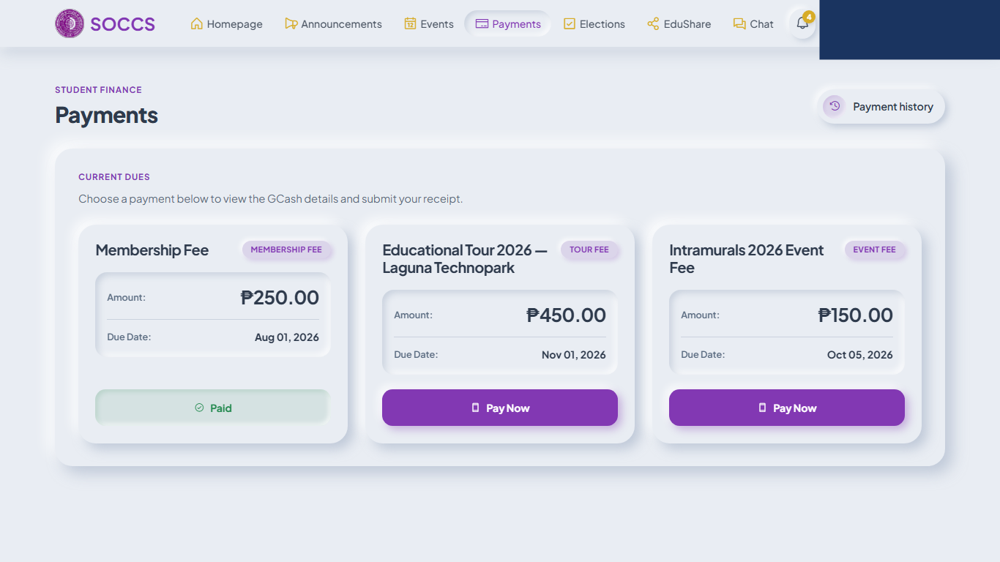
Enlarge screenshot ↗- Go to the Payments tab to view all payables.
- Check the amount, category, and due date of each item.
- Select the payment you want to settle.
- Submit your GCash payment and receipt for verification.
Figure 135. This figure shows the GCash payment submission of UniOrg.

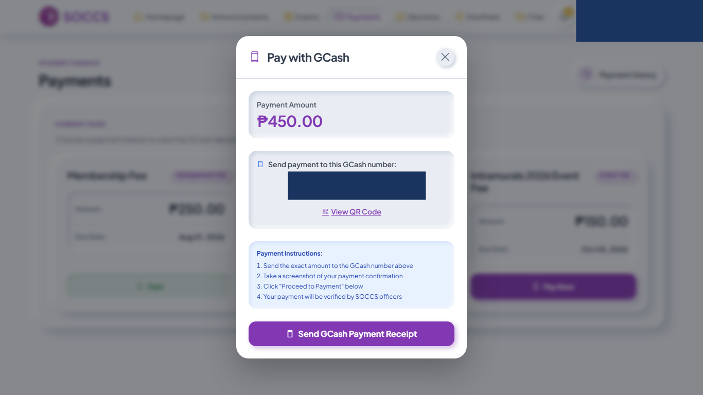
Enlarge screenshot ↗- Go to the Payments tab to view the list of payables.
- Select the payment item and choose GCash as the payment method.
- Send the exact amount to the displayed GCash account number.
- Enter your GCash reference number and upload the screenshot of your receipt in the modal.
- Click the Submit button.
- Your payment is marked as pending until the organization admin verifies it, and you may view your receipt in the payment history.
Figure 136. This figure shows the student elections list of UniOrg.

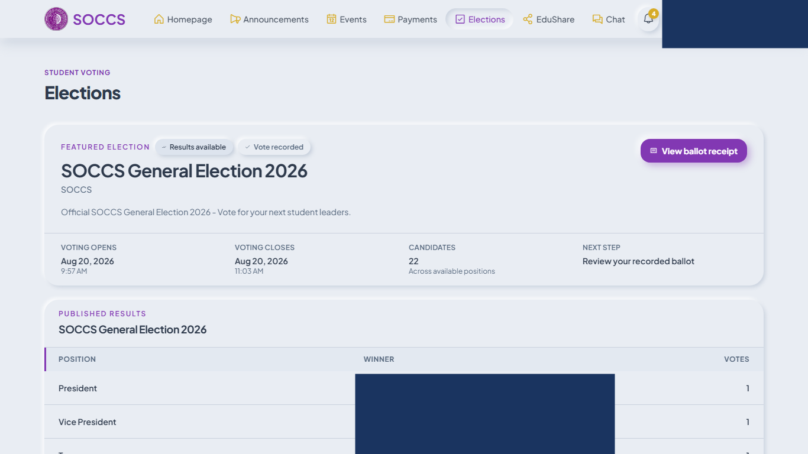
Enlarge screenshot ↗- Go to the Elections tab to view all elections.
- Check which elections are active and which are closed.
- Open an active election to view its positions and candidates.
- Cast your vote within the voting period.
Figure 137. This figure shows the election vote casting modal of UniOrg.

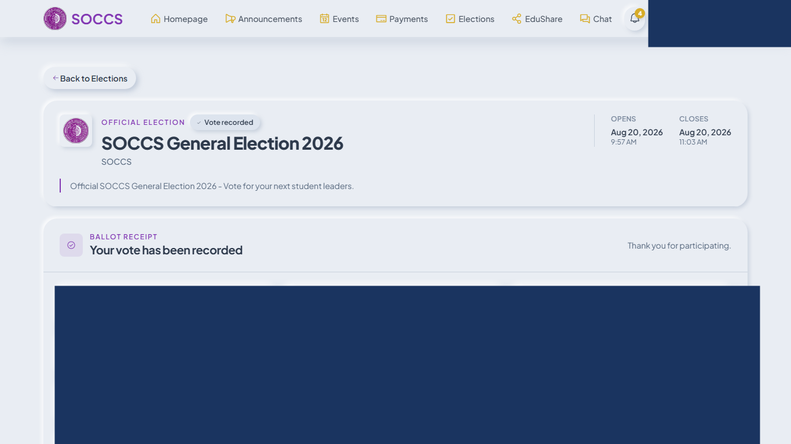
Enlarge screenshot ↗- Go to the Elections tab during the voting period to view the active election.
- Select the position and the candidate you want to vote for.
- Click the Vote or Cast Vote button to open the confirmation modal.
- Review your selection and click Confirm.
- A success message displays, and your vote is recorded. Note that each student can only vote once per position.
Figure 138. This figure shows the student documents page of UniOrg.

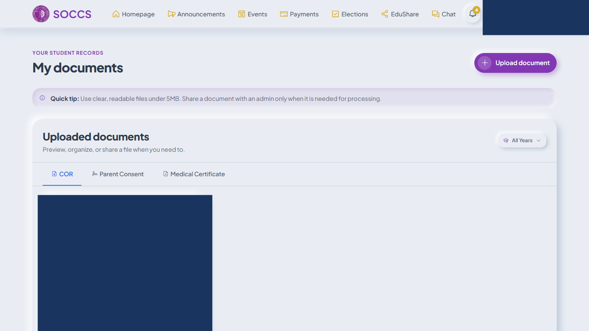
Enlarge screenshot ↗- Open the My Documents page to view your submitted documents.
- Check the verification status of each document.
- Upload a new document with its type and validity details.
- Track the status until an officer verifies it.
Figure 139. This figure shows the student e-library list of UniOrg.

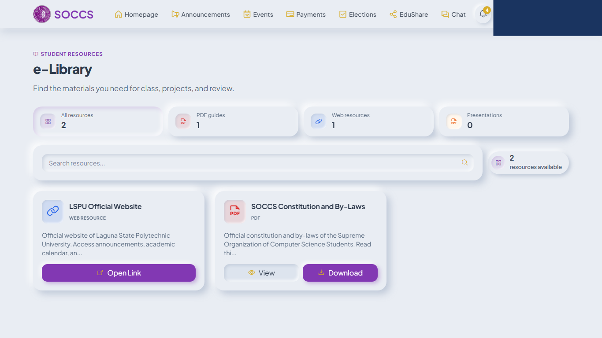
Enlarge screenshot ↗- Go to the E-Library tab to browse shared resources.
- Use the search bar to find a title or topic.
- Click a resource to preview its details.
- Download the file if you need a copy.
Figure 140. This figure shows the student EduShare list of UniOrg.

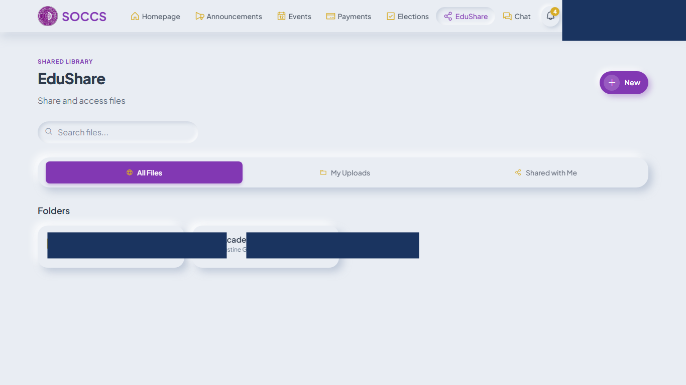
Enlarge screenshot ↗- Go to the EduShare tab to browse shared folders and files.
- Open a folder to view its contents.
- Use the search to locate a specific material.
- Download the file you need.
Figure 141. This figure shows the new complaint submission modal of UniOrg.

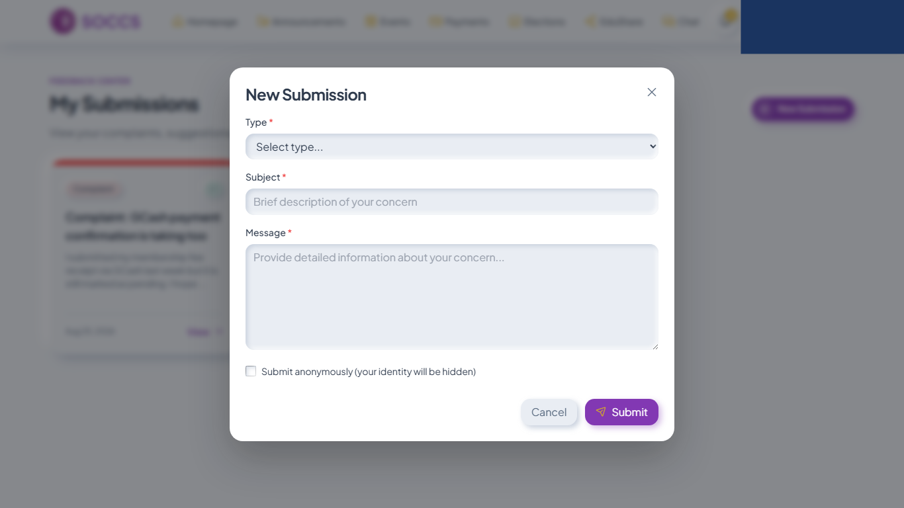
Enlarge screenshot ↗- Go to the Complaints or Feedback Hub tab.
- Click the New Complaint or File Complaint button.
- Fill out the subject, category, and the detailed description of your concern.
- Attach any supporting file if needed and click Submit.
- Your complaint is recorded and you can track its status in your complaints list.
Figure 142. This figure shows the student chatbot of UniOrg.

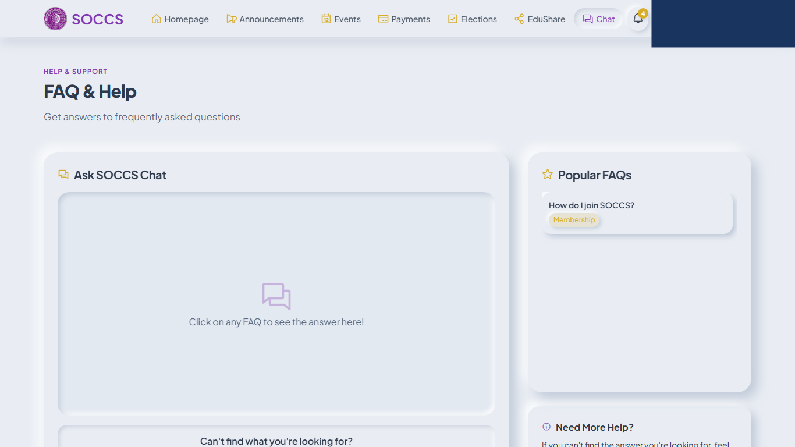
Enlarge screenshot ↗- Open the chatbot panel from your dashboard.
- Type your question in the chat box and send it.
- Read the answer generated from the FAQ library.
- Ask a follow-up or contact an officer if needed.
Organization Admin and Officer Users (covers Adviser)
Figure 143. This figure shows the organization admin dashboard of UniOrg.

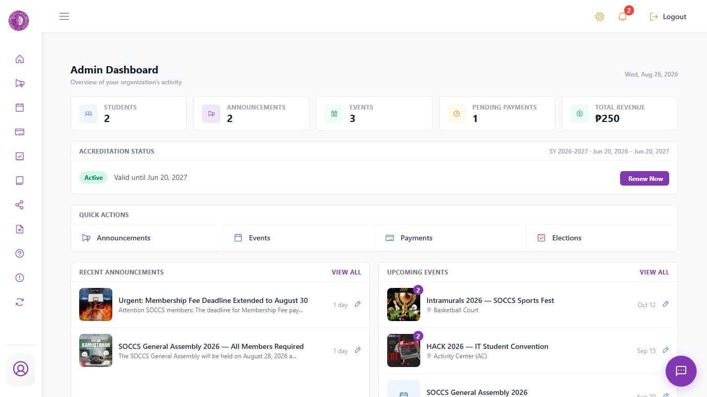
Enlarge screenshot ↗- Log in with your organization admin account.
- View the overview cards for members, events, payments, and pending items.
- Click any card or sidebar item to manage that module.
- Check notifications for accreditation and proposal updates.
Figure 144. This figure shows the accreditation renewal requester information form of UniOrg.

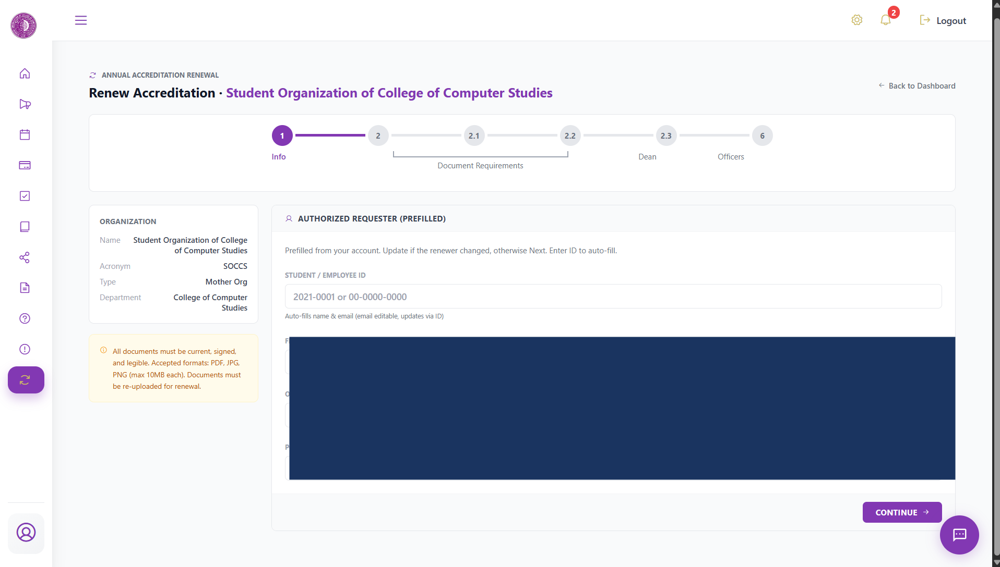
Enlarge screenshot ↗- Log in as an organization admin and go to the Accreditation module.
- Click the Renew or Apply for Accreditation button.
- Fill out the requester information form with the organization name, school year, and contact person details.
- Click Next to proceed to the document requirements step.
- Complete the remaining steps: upload the required documents, upload the members list, fill out the college dean form, and encode the incoming officers.
- Submit the application. OSAS reviews it and updates its accreditation status.
Figure 145. This figure shows the accreditation document requirements part 1 of UniOrg.

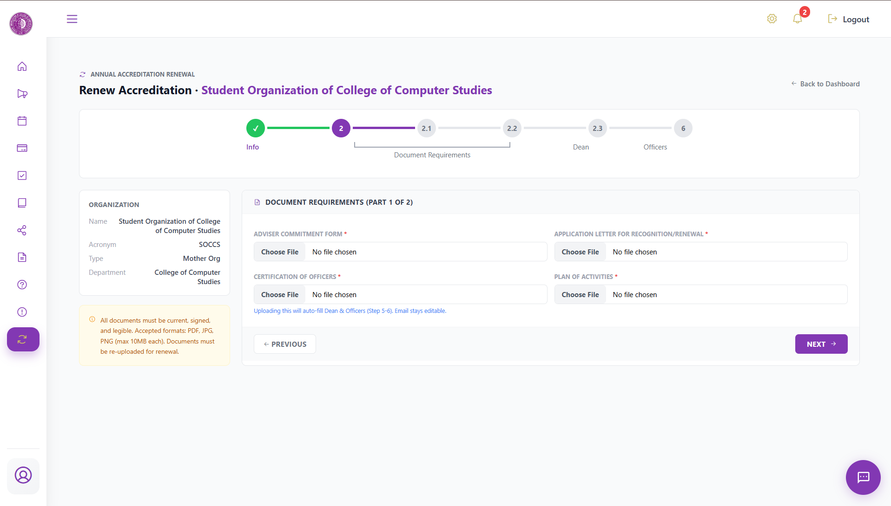
Enlarge screenshot ↗- After the requester info step, click Continue to reach Document Requirements.
- Upload each required document in its assigned slot.
- Accepted formats are PDF, JPG, and PNG with max 10MB each.
- Wait for the OCR and NLP processing status to complete per file.
- Proceed to the next part once all slots are filled.
Figure 146. This figure shows the accreditation document requirements part 2 of UniOrg.

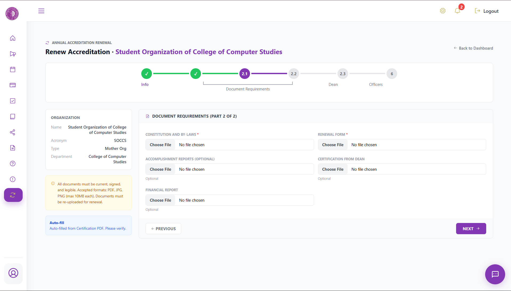
Enlarge screenshot ↗- Continue with the remaining requirement slots in this part.
- Replace any rejected file by uploading a clearer copy.
- Check the AI summary and tags per document if displayed.
- Click Next to move to the members list step.
Figure 147. This figure shows the members list upload step of accreditation renewal in UniOrg.

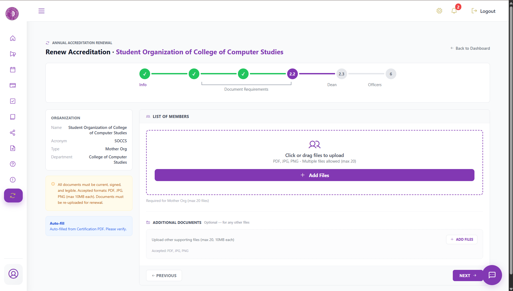
Enlarge screenshot ↗- Upload the official members list file in the upload slot.
- Verify that the encoded count matches your expected members.
- Fix any errors in the file and re-upload if needed.
- Click Next to proceed to the dean form step.
Figure 148. This figure shows the college dean form step of accreditation renewal in UniOrg.

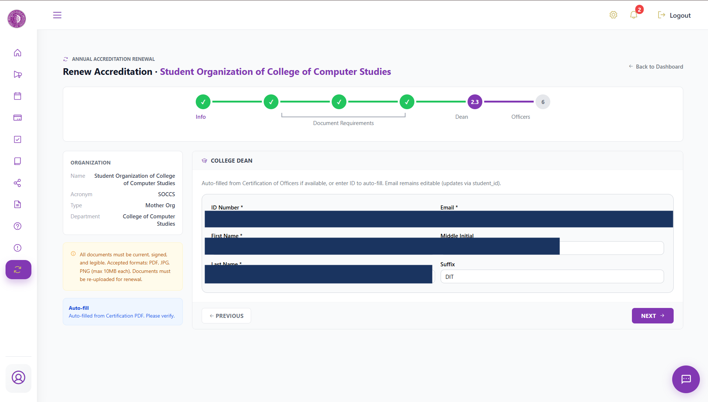
Enlarge screenshot ↗- Fill out the college dean certification details required.
- Attach the signed certification file in its slot.
- Double-check the entries for correctness.
- Click Next to move to the officers step.
Figure 149. This figure shows the incoming officers step of accreditation renewal in UniOrg.

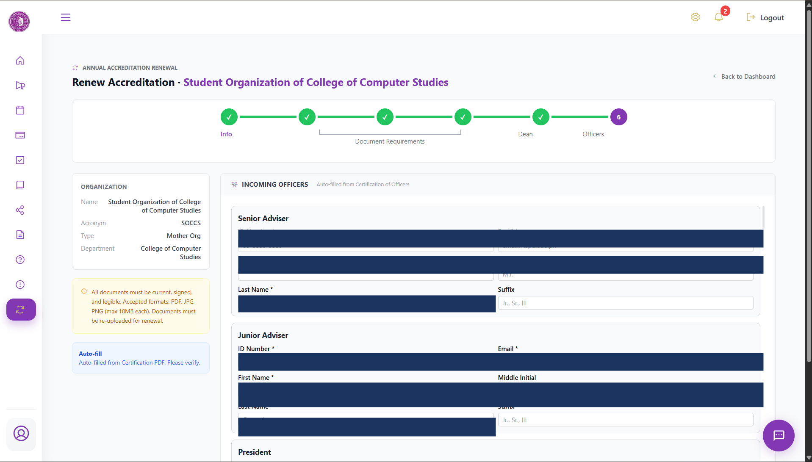
Enlarge screenshot ↗- Encode the incoming officers with their respective positions.
- Review the list to make sure it is complete and accurate.
- Remove or correct any wrong entry before submitting.
- Submit the application for OSAS review.
Figure 150. This figure shows the announcement creation modal of UniOrg.

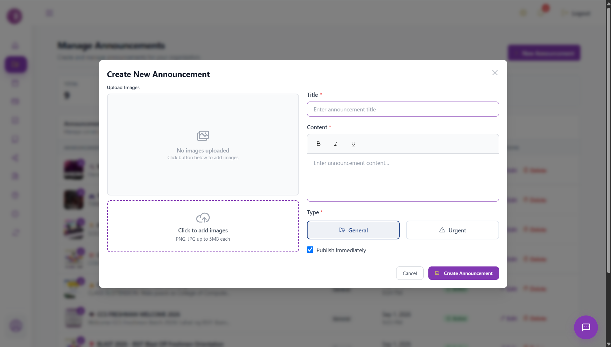
Enlarge screenshot ↗- Go to the Announcements module.
- Click the Create or New Announcement button.
- Enter the announcement title, details, and target audience.
- Click the Post or Publish button.
- The announcement is posted and appears in the announcements list of the members.
Figure 151. This figure shows the admin announcements list of UniOrg.

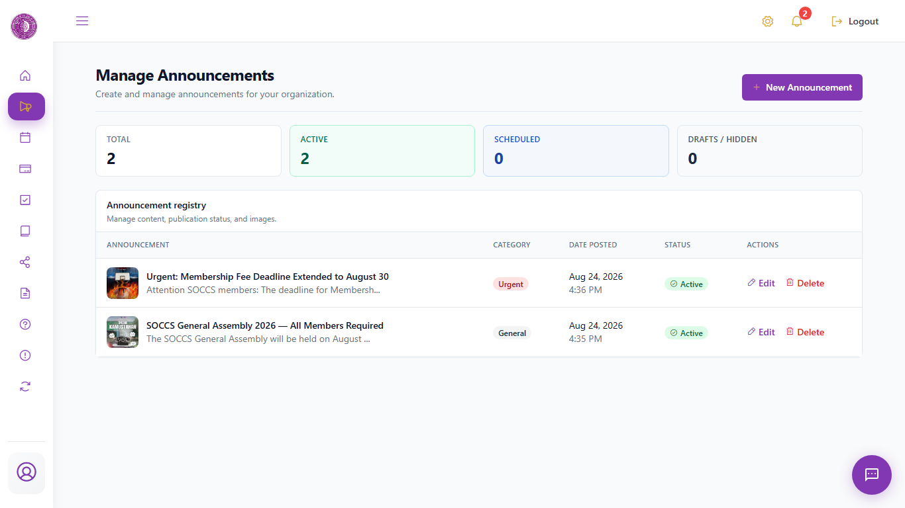
Enlarge screenshot ↗- Go to Announcements to view all posted announcements.
- Click an item to view or edit its contents.
- Delete outdated posts to keep the list clean.
- Click Create to post a new announcement.
Figure 152. This figure shows the payment creation modal of UniOrg.

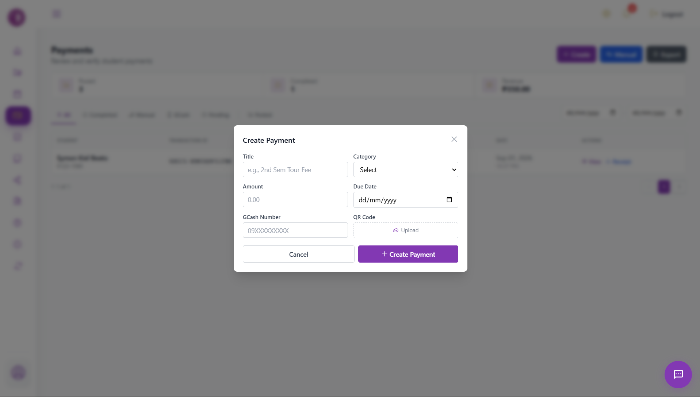
Enlarge screenshot ↗- Go to the Payments module.
- Click the Create or New Payment button.
- Enter the payment title, amount, deadline, and payment instructions.
- Click the Save or Publish button.
- The payable is published and members can now submit their payments for verification.
Figure 153. This figure shows the admin payments list of UniOrg.

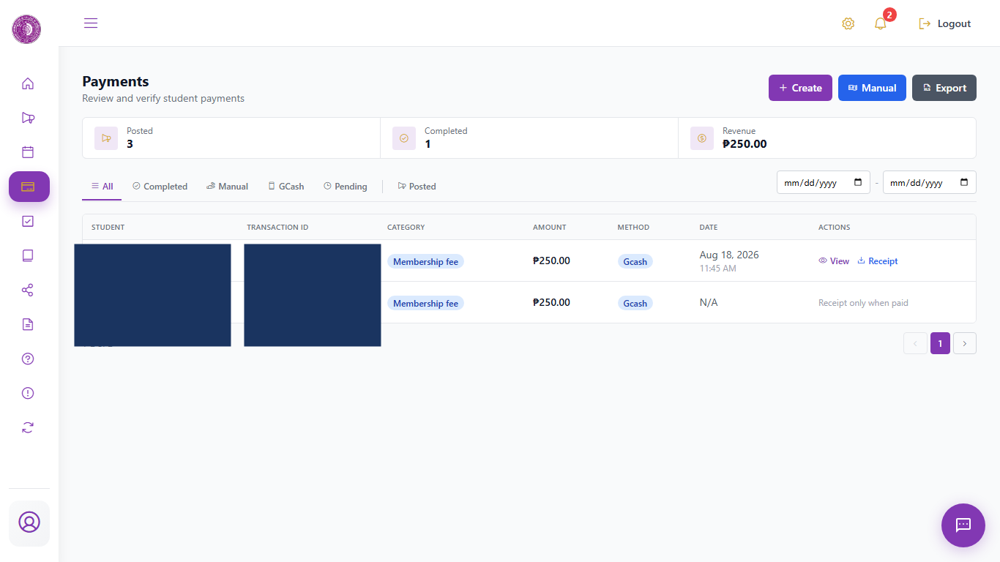
Enlarge screenshot ↗- Go to Payments to view all payment collections.
- Track which members have paid and which are pending.
- Open a collection to verify submitted receipts.
- Click Create to publish a new collection.
Figure 154. This figure shows the admin elections list of UniOrg.

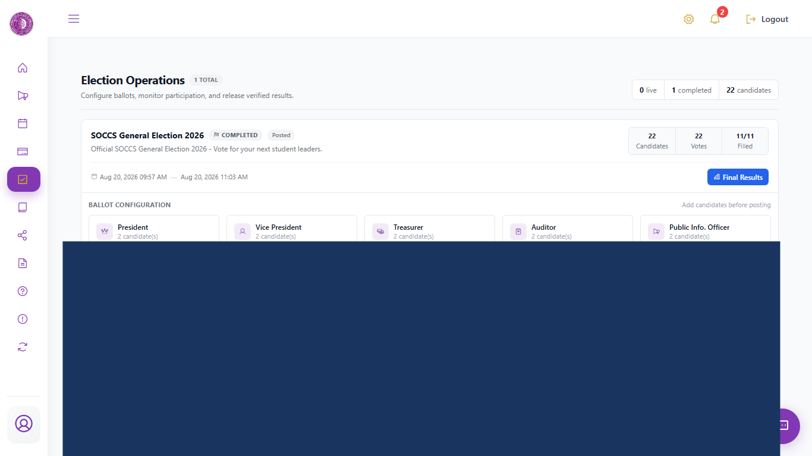
Enlarge screenshot ↗- Go to Elections to view all elections of the organization.
- Open an election to manage its candidates and schedule.
- Monitor the voting progress while it is active.
- Publish the results once voting ends.
Figure 155. This figure shows the election results view of UniOrg.

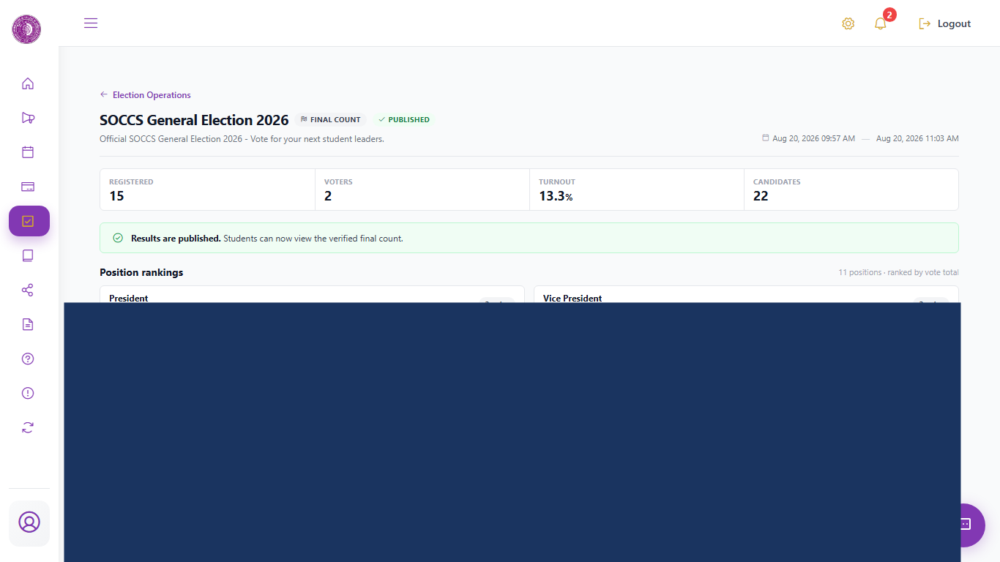
Enlarge screenshot ↗- Open the finished election to view the tally.
- Check the vote count per candidate per position.
- Verify the winners before publishing.
- Click Publish so members can view the results.
Figure 156. This figure shows the student documents management page of UniOrg.

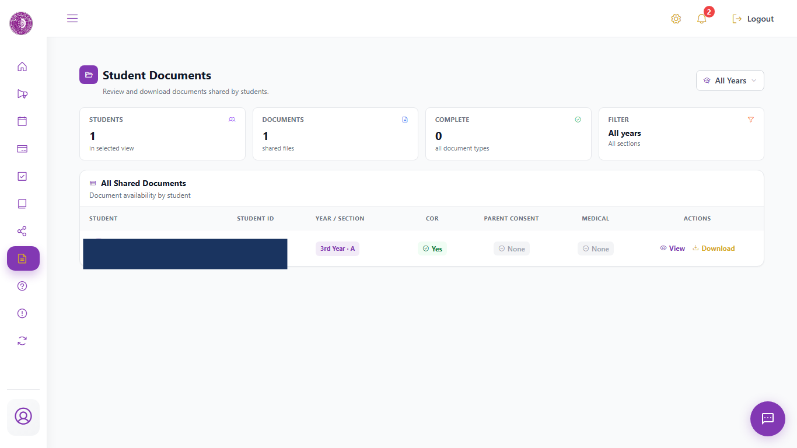
Enlarge screenshot ↗- Go to Documents to review submitted student documents.
- Open each submission to check its details and file.
- Mark it verified or return it with remarks.
- Track the overall status in the list.
Figure 157. This figure shows the e-library resource upload modal of UniOrg.

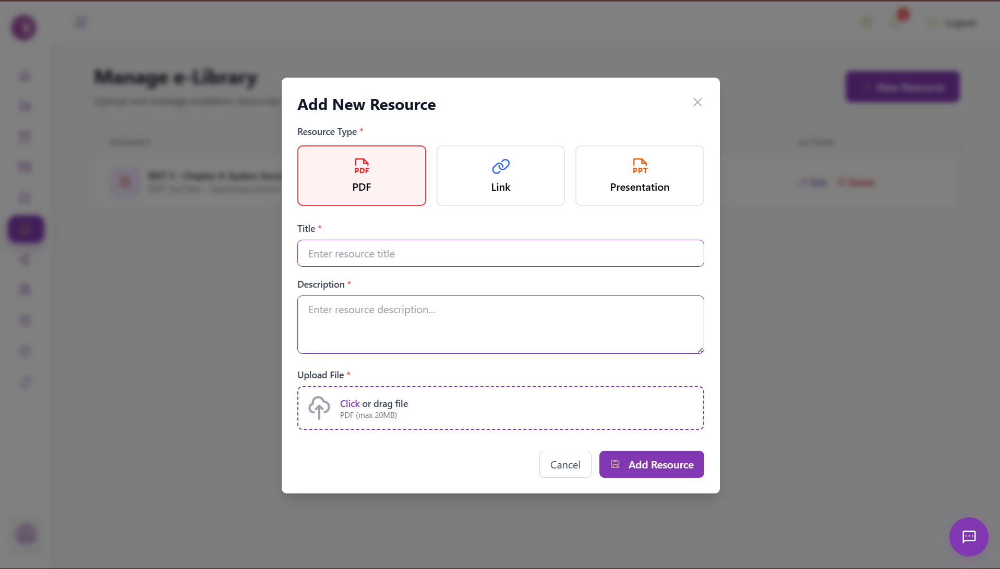
Enlarge screenshot ↗- Go to the E-Library module.
- Click the Add or Upload Resource button.
- Enter the resource title, type, and description, then attach the file.
- Click the Save or Upload button.
- The resource is saved and appears in the e-library list for members to access.
Figure 158. This figure shows the e-library management page of UniOrg.

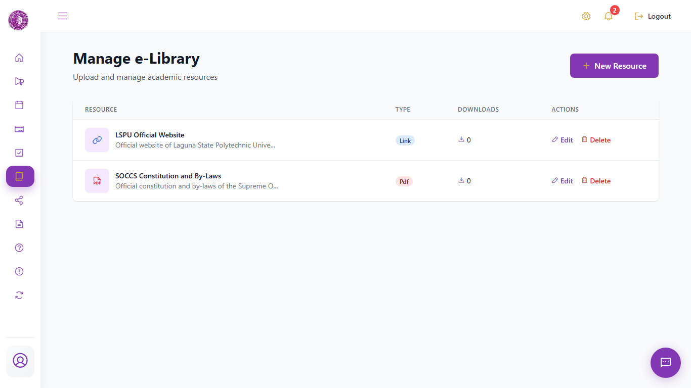
Enlarge screenshot ↗- Go to E-Library to manage shared resources.
- Review the list of uploaded materials and their downloads.
- Add new resources or remove outdated ones.
- Check that members can access the published items.
Figure 159. This figure shows the EduShare folder creation modal of UniOrg.

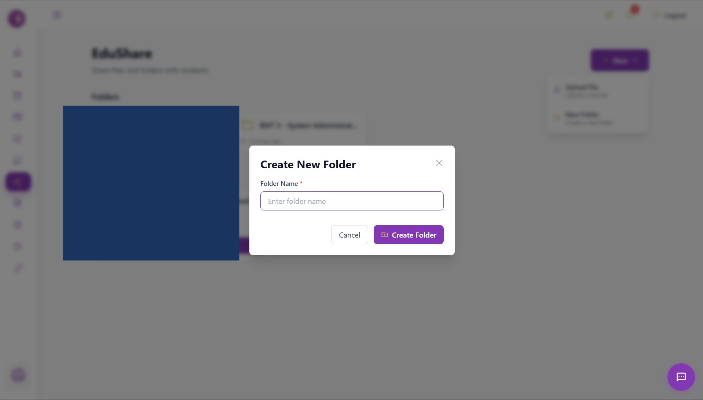
Enlarge screenshot ↗- Go to the EduShare module.
- Click the New Folder or Create Folder button.
- Enter the folder name and description.
- Click the Create button.
- The folder is created and you can now upload files into it for the members.
Figure 160. This figure shows the chatbot FAQ creation modal of UniOrg.

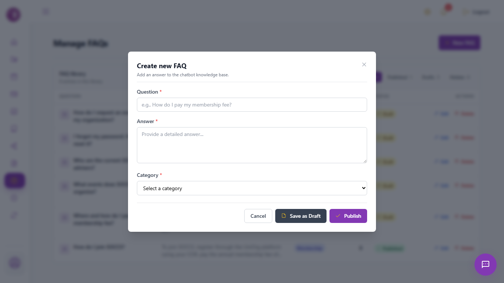
Enlarge screenshot ↗- Go to the Chatbot or FAQ management module.
- Click the New FAQ or Add FAQ button.
- Enter the frequently asked question and its answer.
- Click the Save button.
- The FAQ is saved and the chatbot uses it when members ask related questions.
Figure 161. This figure shows the chatbot FAQs page of UniOrg.

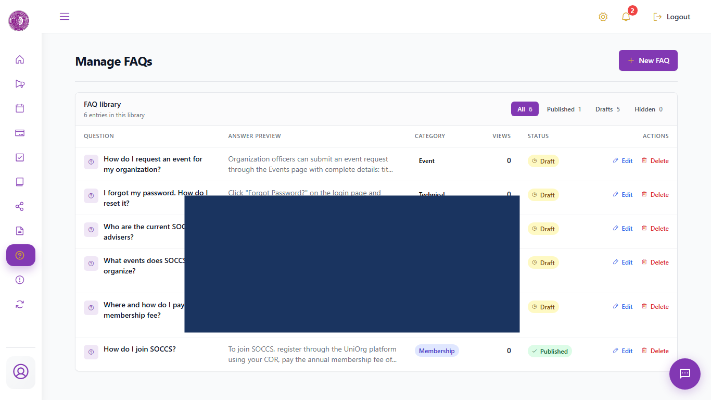
Enlarge screenshot ↗- Go to the Chatbot or FAQ page to view all entries.
- Review the questions and answers stored.
- Add new FAQs or update existing answers.
- The chatbot uses these entries when members ask.
Figure 162. This figure shows the complaint response modal of UniOrg.

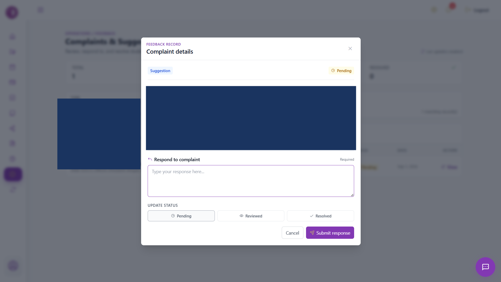
Enlarge screenshot ↗- Go to the Complaints module to view the list of filed complaints.
- Click a complaint to view its full details.
- Type your response or resolution in the respond modal.
- Click the Send or Resolve button.
- The complainant is notified of your response and the complaint status is updated.
Figure 163. This figure shows the admin complaints list of UniOrg.

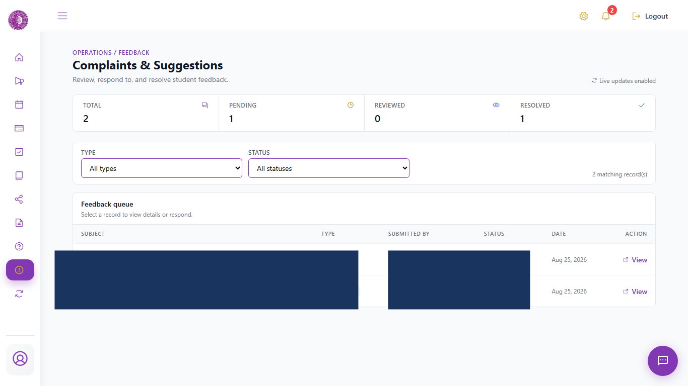
Enlarge screenshot ↗- Go to Complaints to view the filed complaints queue.
- Open a complaint to read its full details.
- Type your response or resolution in the respond modal.
- Send it so the complainant gets notified and the status updates.
Dean Users
Figure 164. This figure shows the dean dashboard of UniOrg.

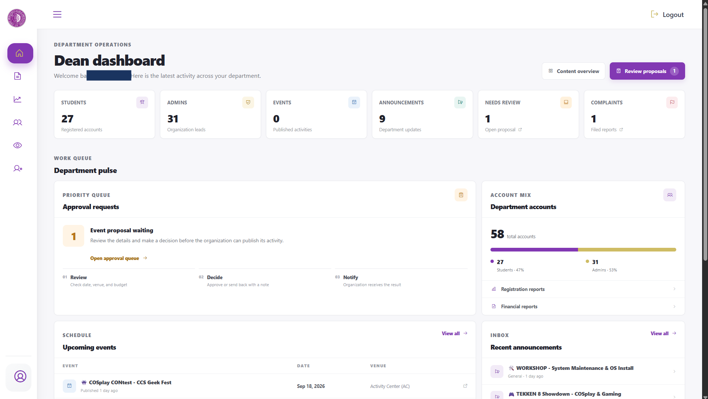
Enlarge screenshot ↗- Log in using your dean account to land on the dean dashboard.
- View the summary cards showing the number of organizations, members, pending proposals, and announcements in your college.
- Use the sidebar to navigate to User Management, Content Overview, Event Proposals, or Reports.
- Click any notification or pending item to go directly to the page that needs your action.
Figure 165. This figure shows the department user management list of UniOrg.

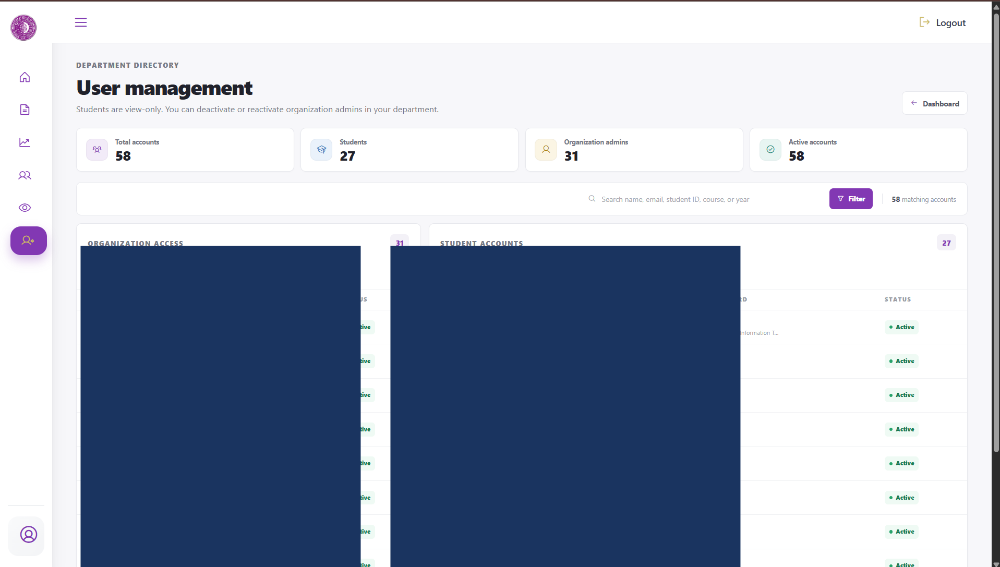
Enlarge screenshot ↗- Go to User Management to view department users.
- Search or filter to find a specific account.
- Open a user to review their profile and role.
- Update roles or deactivate accounts as needed.
Figure 166. This figure shows the pending event proposals list of UniOrg.

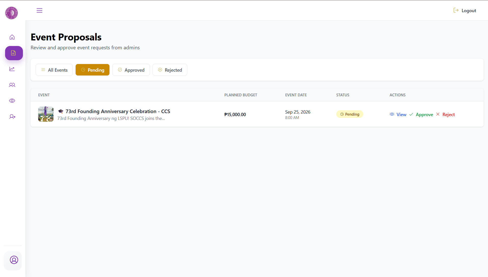
Enlarge screenshot ↗- Go to the Event Proposals module and open the Pending tab.
- Review the list of event proposals submitted by the organizations for approval.
- Click a proposal to open its details and review the event information and attached documents.
- Click Approve to endorse the proposal or Reject with your remarks.
- The proposal status is updated and the organization is notified of your decision.
Figure 167. This figure shows the event proposal details modal of UniOrg.

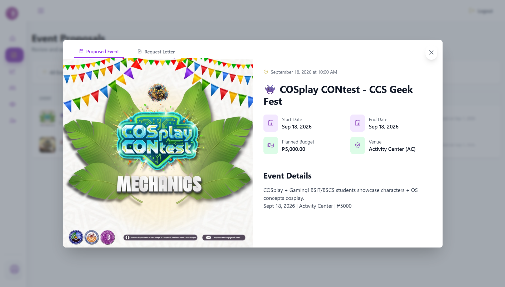
Enlarge screenshot ↗- From the event proposals list, click the proposal you want to review.
- The details modal opens showing the event title, date, venue, description, and attached documents.
- Read through the proposal and verify that the details are complete and correct.
- Click the Approve button to endorse the event, or the Reject button with your remarks if revisions are needed.
- A confirmation message displays and the proposal moves to its updated status.
Figure 168. This figure shows the registration reports web list of UniOrg.

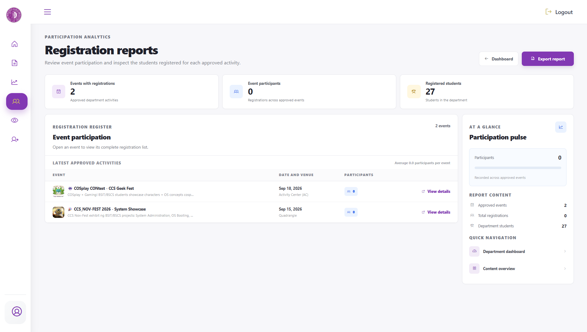
Enlarge screenshot ↗- Go to Reports and open the registration section.
- Select the event to view its registrants.
- Review the list shown on the page.
- Export or print the report if required.
Figure 169. This figure shows the financial reports payments tab of UniOrg.

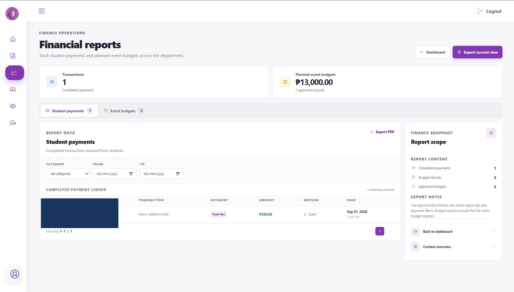
Enlarge screenshot ↗- Go to Reports and open the Finance section.
- Select the Payments tab to view collections and totals.
- Review the figures per organization or event.
- Export the summary for liquidation if needed.
Figure 170. This figure shows the content overview announcements tab of UniOrg.

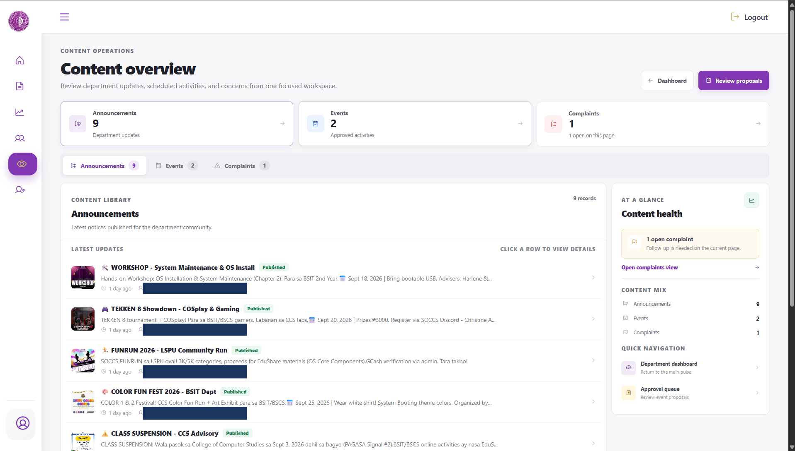
Enlarge screenshot ↗- Go to Content Overview as a dean.
- Open the Announcements tab to monitor posts.
- Review the content shared within your college.
- Flag any item that needs correction by the org.
Figure 171. This figure shows the dean profile edit modal of UniOrg.

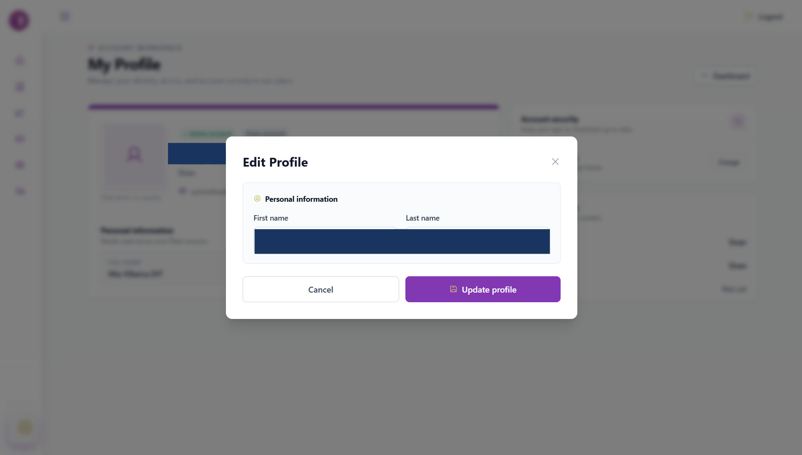
Enlarge screenshot ↗- Log in as a dean and go to your Profile page.
- Click the Edit Profile button to open the edit modal.
- Update your profile details as needed.
- Click the Save button.
- A confirmation message displays and your updated details appear on your profile.
Figure 172. This figure shows the approved event proposals list of UniOrg.

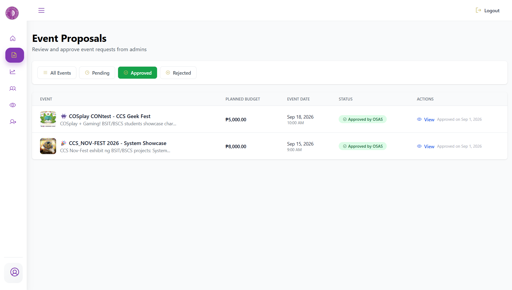
Enlarge screenshot ↗- Go to Event Proposals and open the Approved tab.
- Review the proposals you already endorsed.
- Open any item to re-check its details.
- The organizations are notified of the approval.
OSAS Users
Figure 173. This figure shows the OSAS operations dashboard of UniOrg.

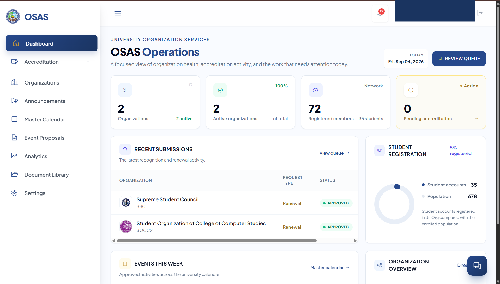
Enlarge screenshot ↗- Log in with your OSAS account to view the operations dashboard.
- Check the cards for accreditations, proposals, and organizations.
- Click any pending item to act on it directly.
- Use the sidebar to manage each area.
Figure 174. This figure shows the accreditation renewal list of UniOrg.

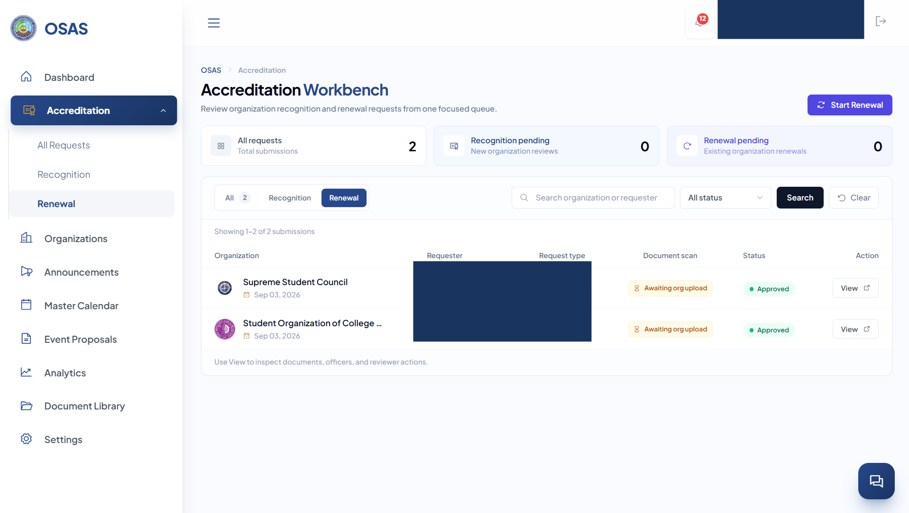
Enlarge screenshot ↗- Go to Accreditation to view renewal applications.
- Open an application to review its documents and details.
- Approve it or return it with remarks for compliance.
- The organization sees the updated status.
Figure 175. This figure shows the organization registry list of UniOrg.

- Go to Organizations to browse the registry.
- Search for an organization by name or college.
- Open its profile to view accreditation and details.
- Archive or update records as needed.
Figure 176. This figure shows the master calendar month view of UniOrg.

- Go to the Master Calendar to view all events.
- Browse the month view for university-wide activities.
- Filter by organization or date if needed.
- Click an event to view its full details.
Figure 177. This figure shows the OSAS event proposals list of UniOrg.

- Go to Event Proposals to review submissions across organizations.
- Open a proposal to check its documents and details.
- Approve or return it with your remarks.
- The organization and dean are notified.
Figure 178. This figure shows the analytics and reports dashboard of UniOrg.

- Go to Analytics to view event and participation charts.
- Review the statistics shown per college or organization.
- Use the figures for planning and reports.
- Export the data if a hard copy is needed.
Figure 179. This figure shows the document library folders list of UniOrg.

- Go to the Document Library to browse folders per organization.
- Open a folder to view its archived documents.
- Use the AI summary and tags to find files fast.
- Download any file when needed.
Figure 180. This figure shows the managed accounts list of UniOrg.

- Go to Settings and open Account Management.
- Browse the list of managed accounts.
- Search or filter by role or college.
- Create, update, or deactivate accounts as needed.
Figure 181. This figure shows the dean account creation modal of UniOrg.

- Log in as an OSAS user and go to Settings, then Account Management.
- Click the Create Dean or Add Dean button.
- Enter the dean details and assign the college.
- Click the Save button.
- The dean account is created and appears in the accounts list.
Figure 182. This figure shows the accreditation expiration period setting of UniOrg.

- Go to Settings in the OSAS panel.
- Locate the accreditation expiration period setting.
- Set the expiration period for the accreditation cycle.
- Click Apply to All and Save.
- The expiration setting is applied and is used to track the accreditation status of the organizations.
Figure 183. This figure shows the OSAS announcement creation modal of UniOrg.

- Go to the Announcements module.
- Click the Create or New Announcement button.
- Enter the announcement title, details, and target audience.
- Click the Post or Publish button.
- The announcement is posted university-wide and appears in the announcements list.
Account Settings (All Users)
Figure 184. This figure shows the password change form of UniOrg.

- Go to your Profile or the Settings page.
- Enter your current password in the old password field.
- Enter your new password and confirm it.
- Click the Submit or Update button.
- Your password is updated and you can now use the new password when logging in.